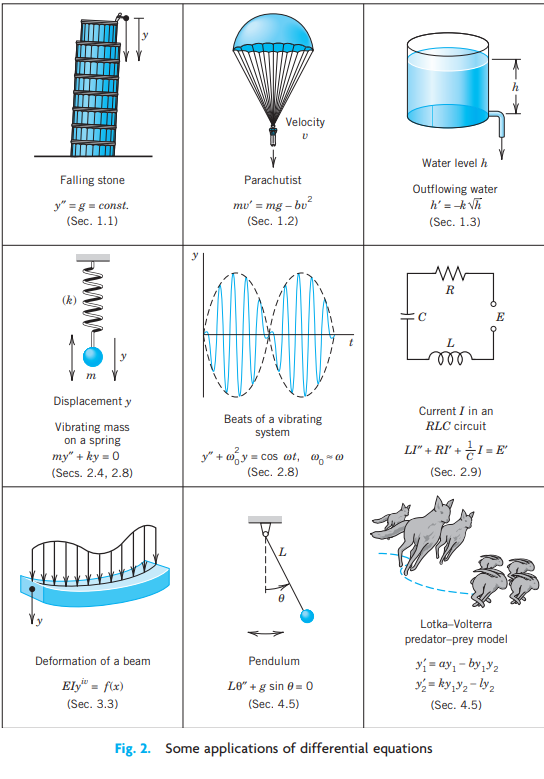
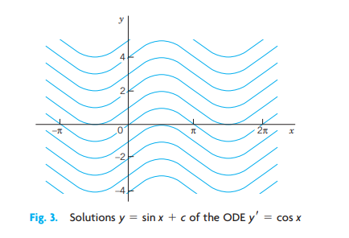

3 CHAPTER 01: First-Order ODEs
Chapter 1 begins the study of ordinary differential equations (ODEs) by deriving them from physical or other problems (modeling), solving them by standard mathematical methods, and interpreting solutions and their graphs in terms of a given problem. The simplest ODEs to be discussed are ODEs of the first order because they involve only the first derivative of the unknown function and no higher derivatives. These unknown functions will usually be denoted by \(y(x)\) or \(y(t)\) when the independent variable denotes time \(t\). The chapter ends with a study of the existence and uniqueness of solutions of ODEs in Sec. 1.7.
Understanding the basics of ODEs requires solving problems by hand (paper and pencil, or typing on your computer, but first without the aid of a CAS). In doing so, you will gain an important conceptual understanding and feel for the basic terms, such as ODEs, direction field, and initial value problem. If you wish, you can use your Computer Algebra System (CAS) for checking solutions.
COMMENT. Numerics for first-order ODEs can be studied immediately after this chapter. See Secs. 21.1-21.2, which are independent of other sections on numerics.
Prerequisite: Integral calculus. Sections that may be omitted in a shorter course: 1.6, 1.7. References and Answers to Problems: App. 1 Part A, and App. 2.
3.1 1.1 Basic Concepts. Modeling

If we want to solve an engineering problem (usually of a physical nature), we first have to formulate the problem as a mathematical expression in terms of variables, functions, and equations. Such an expression is known as a mathematical model of the given problem. The process of setting up a model, solving it mathematically, and interpreting the result in physical or other terms is called mathematical modeling or, briefly, modeling.
Modeling needs experience, which we shall gain by discussing various examples and problems. (Your computer may often help you in solving but rarely in setting up models.)
Now many physical concepts, such as velocity and acceleration, are derivatives. Hence a model is very often an equation containing derivatives of an unknown function. Such a model is called a differential equation. Of course, we then want to find a solution (a function that satisfies the equation), explore its properties, graph it, find values of it, and interpret it in physical terms so that we can understand the behavior of the physical system in our given problem. However, before we can turn to methods of solution, we must first define some basic concepts needed throughout this chapter.

An ordinary differential equation (ODE) is an equation that contains one or several derivatives of an unknown function, which we usually call \(y(x)\) (or sometimes \(y(t)\) if the independent variable is time \(t\)). The equation may also contain \(y\) itself, known functions of \(x\) (or \(t\)), and constants. For example,
\[y' = \cos x \tag{3.1}\]
\[y'' + 9y = e^{-2x} \tag{3.2}\]
\[y'y''' - \frac{3}{2}y'^2 = 0 \tag{3.3}\]
are ordinary differential equations (ODEs). Here, as in calculus, \(y'\) denotes \(dy/dx\), \(y'' = d^2y/dx^2\), etc. The term ordinary distinguishes them from partial differential equations (PDEs), which involve partial derivatives of an unknown function of two or more variables. For instance, a PDE with unknown function \(u\) of two variables \(x\) and \(y\) is
\[\frac{\partial^2 u}{\partial x^2} + \frac{\partial^2 u}{\partial y^2} = 0\]
PDEs have important engineering applications, but they are more complicated than ODEs; they will be considered in Chap. 12.
An ODE is said to be of order \(n\) if the \(n\)th derivative of the unknown function \(y\) is the highest derivative of \(y\) in the equation. The concept of order gives a useful classification into ODEs of first order, second order, and so on. Thus, (1) is of first order, (2) of second order, and (3) of third order.
In this chapter we shall consider first-order ODEs. Such equations contain only the first derivative \(y'\) and may contain \(y\) and any given functions of \(x\). Hence we can write them as
\[F(x, y, y') = 0 \tag{3.4}\]
or often in the form
\[y' = f(x, y)\]
This is called the explicit form, in contrast to the implicit form (4). For instance, the implicit ODE \(x^{-3}y' - 4y^2 = 0\) (where \(x \neq 0\)) can be written explicitly as \(y' = 4x^3y^2\).
3.1.1 Concept of Solution
A function
\[y = h(x)\]
is called a solution of a given ODE (4) on some open interval \(a < x < b\) if \(h(x)\) is defined and differentiable throughout the interval and is such that the equation becomes an identity if \(y\) and \(y'\) are replaced with \(h\) and \(h'\) respectively. The curve (the graph) of \(h\) is called a solution curve.
Here, open interval \(a < x < b\) means that the endpoints \(a\) and \(b\) are not regarded as points belonging to the interval. Also, \(a < x < b\) includes infinite intervals \(-\infty < x < b\), \(a < x < \infty\), \(-\infty < x < \infty\) (the real line) as special cases.
3.1.2 EXAMPLE 1 Verification of Solution
Verify that \(y = c/x\) (\(c\) an arbitrary constant) is a solution of the ODE \(xy' = -y\) for all \(x \neq 0\). Indeed, differentiate \(y = c/x\) to get \(y' = -c/x^2\). Multiply this by \(x\), obtaining \(xy' = -c/x\); thus, \(xy' = -y\), the given ODE.
3.1.3 EXAMPLE 2 Solution by Calculus. Solution Curves
The ODE \(y' = dy/dx = \cos x\) can be solved directly by integration on both sides. Indeed, using calculus, we obtain \(y = \int \cos x \, dx = \sin x + c\), where \(c\) is an arbitrary constant. This is a family of solutions. Each value of \(c\), for instance, 2.75 or 0 or -8, gives one of these curves. Figure 3 shows some of them, for \(c = -3, -2, -1, 0, 1, 2, 3, 4\).

3.1.4 EXAMPLE 3 (A) Exponential Growth. (B) Exponential Decay
From calculus we know that \(y = ce^{0.2t}\) has the derivative
\[y' = \frac{dy}{dt} = 0.2e^{0.2t} = 0.2y\]
Hence \(y\) is a solution of \(y' = 0.2y\) (Fig. 4A). This ODE is of the form \(y' = ky\). With positive-constant \(k\) it can model exponential growth, for instance, of colonies of bacteria or populations of animals. It also applies to humans for small populations in a large country (e.g., the United States in early times) and is then known as Malthus’s law.1 We shall say more about this topic in Sec. 1.5.
- Similarly, \(y' = -0.2y\) (with a minus on the right) has the solution \(y = ce^{-0.2t}\) (Fig. 4B) modeling exponential decay, as, for instance, of a radioactive substance (see Example 5).


1 Named after the English pioneer in classic economics, THOMAS ROBERT MALTHUS (1766-1834).
We see that each ODE in these examples has a solution that contains an arbitrary constant \(c\). Such a solution containing an arbitrary constant \(c\) is called a general solution of the ODE.
(We shall see that \(c\) is sometimes not completely arbitrary but must be restricted to some interval to avoid complex expressions in the solution.)
We shall develop methods that will give general solutions uniquely (perhaps except for notation). Hence we shall say the general solution of a given ODE (instead of a general solution).
Geometrically, the general solution of an ODE is a family of infinitely many solution curves, one for each value of the constant \(c\). If we choose a specific \(c\) (e.g., \(c = 6.45\) or 0 or -2.01) we obtain what is called a particular solution of the ODE. A particular solution does not contain any arbitrary constants.
In most cases, general solutions exist, and every solution not containing an arbitrary constant is obtained as a particular solution by assigning a suitable value to \(c\). Exceptions to these rules occur but are of minor interest in applications; see Prob. 16 in Problem Set 1.1.
3.1.5 Initial Value Problem
In most cases the unique solution of a given problem, hence a particular solution, is obtained from a general solution by an initial condition \(y(x_0) = y_0\) with given values \(x_0\) and \(y_0\), that is used to determine a value of the arbitrary constant \(c\). Geometrically this condition means that the solution curve should pass through the point \((x_0, y_0)\) in the \(xy\)-plane. An ODE, together with an initial condition, is called an initial value problem. Thus, if the ODE is explicit, \(y' = f(x, y)\), the initial value problem is of the form
\[y' = f(x,y), \quad y(x_0) = y_0 \tag{3.5}\]
3.1.6 EXAMPLE 4 Initial Value Problem
Solve the initial value problem
\[y' = \frac{dy}{dx} = 3y, \quad y(0) = 5.7\]
Solution. The general solution is \(y(x) = ce^{3x}\); see Example 3. From this solution and the initial condition we obtain \(y(0) = ce^0 = c = 5.7\). Hence the initial value problem has the solution \(y(x) = 5.7e^{3x}\). This is a particular solution.
3.1.7 More on Modeling
The general importance of modeling to the engineer and physicist was emphasized at the beginning of this section. We shall now consider a basic physical problem that will show the details of the typical steps of modeling. Step 1: the transition from the physical situation (the physical system) to its mathematical formulation (its mathematical model); Step 2: the solution by a mathematical method; and Step 3: the physical interpretation of the result. This may be the easiest way to obtain a first idea of the nature and purpose of differential equations and their applications. Realize at the outset that your computer (your CAS) may perhaps give you a hand in Step 2, but Steps 1 and 3 are basically your work.